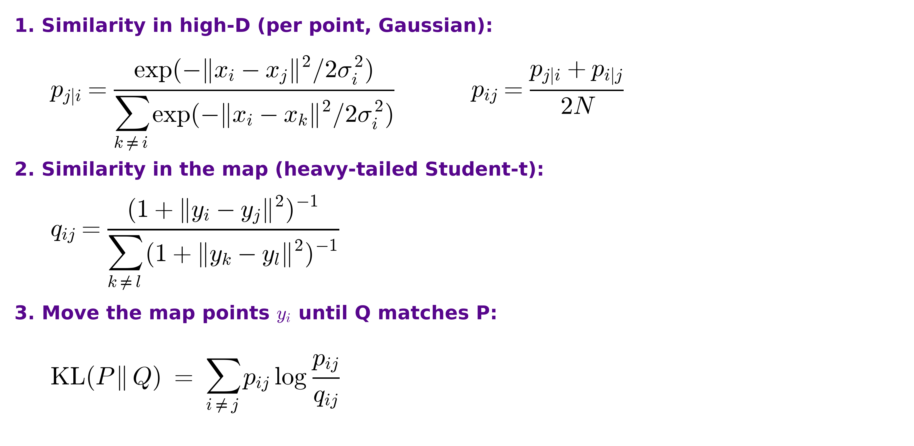
Dimensionality Reduction (continued)
DS-GA 3001 - Fall 2026
Claudio Silva
NYU Center for Data Science
2026-10-20
Recap: Last Week
- Covered clustering (K-means, DBSCAN, hierarchical)
- Introduced dimensionality reduction motivation
- Deep dive into PCA (eigenvectors, covariance, SVD)
- Introduced non-linear methods (LLE)
- Brief mention of t-SNE and UMAP
Today
- t-SNE: what it optimizes, and the ways its pictures mislead
- UMAP: how it differs from t-SNE, and what its two parameters do
- Topomap: a projection that keeps connected components together
- Quality: how to score a projection (trustworthiness and continuity)
- Steering: letting the user shape the layout
Required reading: Wattenberg, Viégas & Johnson, How to Use t-SNE Effectively (Distill, 2016)
Due today (Oct 20): project proposal, 4 pages
Graph Layout using force based approach
SNE and t-SNE
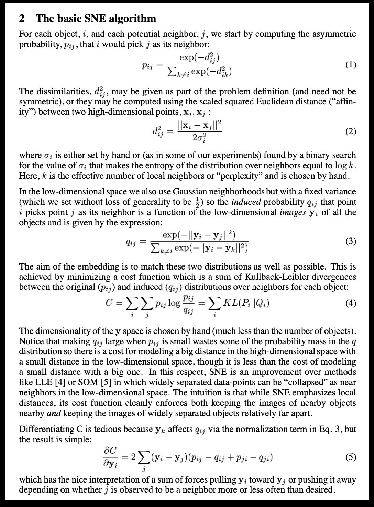
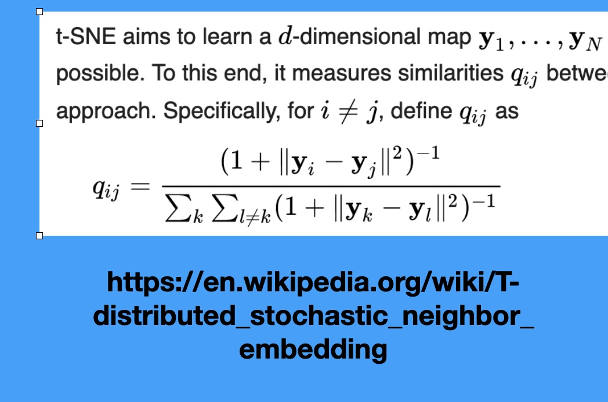
A talk by t-SNE’s creator
Digression: Point Set Surfaces
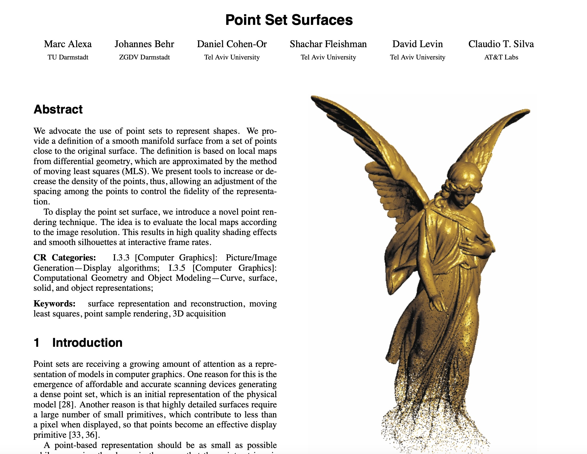
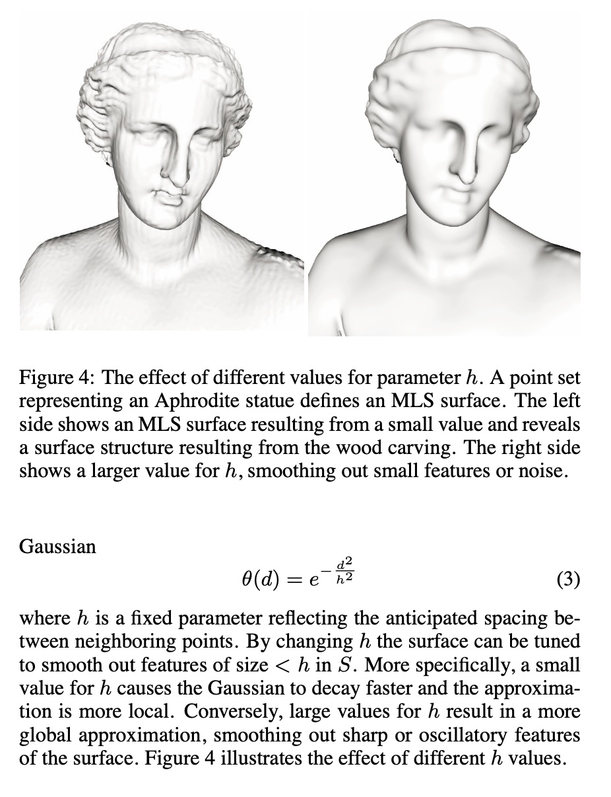
t-SNE in three steps
Why a heavy tail? The crowding problem
- In high dimensions a point can have many neighbors that are all about equally far from it. In 2-D there is not room for them
- With a Gaussian in the map (SNE), moderately distant pairs look very dissimilar, so the optimizer pulls everything into one crowded blob
- The Student-t tail decays polynomially: pairs at moderate distance can sit far apart in the map at almost no cost, which opens gaps between clusters
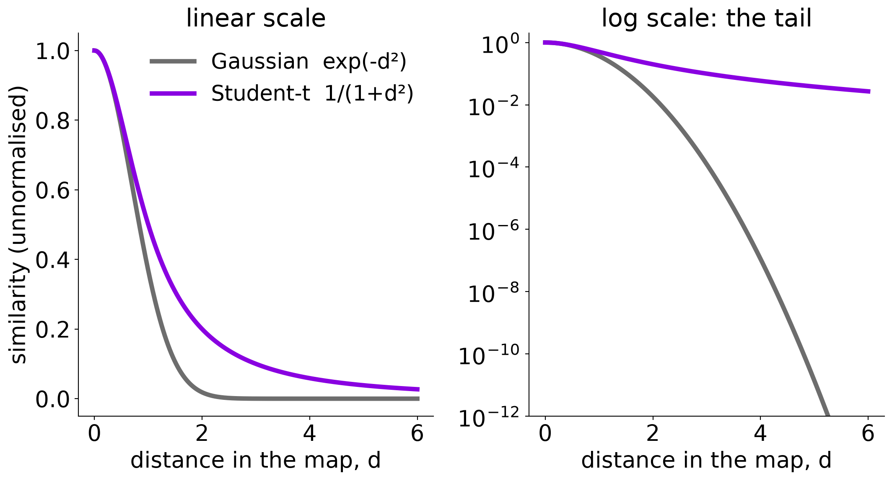
Illustrative kernels: Gaussian vs Student-t (1 degree of freedom), both scaled to 1 at distance 0.
Wattenberg, Viégas, and Johnson, 2016
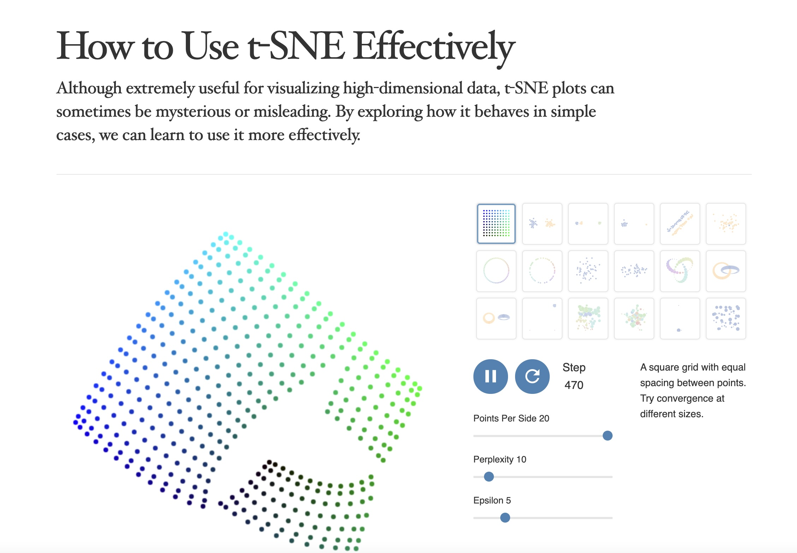
https://distill.pub/2016/misread-tsne/
t-SNE
Wattenberg et al writes “A popular method for exploring high-dimensional data is something called t-SNE… it has an almost magical ability to create compelling two-dimensonal “maps” from data with hundreds or even thousands of dimensions. Although impressive, these images can be tempting to misread.”
Wattenberg: “The algorithm is non-linear and adapts to the underlying data, performing different transformations on different regions. Those differences can be a major source of confusion.”
Watternberg: “A second feature of t-SNE is a tuneable parameter, “perplexity,” which says (loosely) how to balance attention between local and global aspects of your data. The parameter is, in a sense, a guess about the number of close neighbors each point has. The perplexity value has a complex effect on the resulting pictures.”
t-SNE
- “Those hyperparameters really matter”
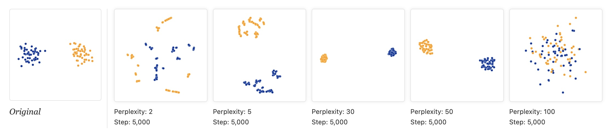
- “The image for perplexity 100, with merged clusters, illustrates a pitfall: for the algorithm to operate properly, the perplexity really should be smaller than the number of points.”
Try it: perplexity on 1,797 digits
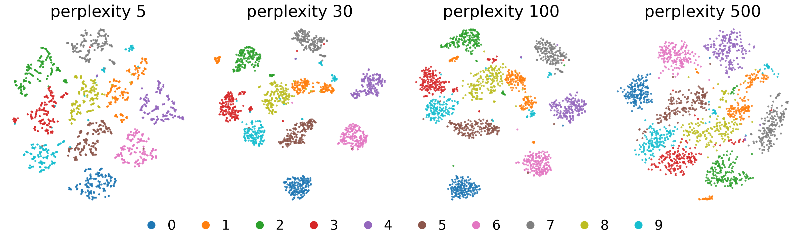
- Same data and seed; only the perplexity changes
- At 5 the groups are loose and fragmented; 30 and 100 give ten clear groups; at 500 (more than a quarter of the dataset) they press into each other
- Which groups end up next to each other changes from panel to panel
t-SNE
- “Each of the plots above was made with 5,000 iterations with a learning rate (often called “epsilon”) of 10, and had reached a point of stability by step 5,000. How much of a difference do those values make?”
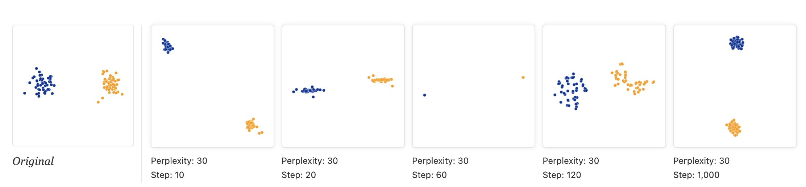
t-SNE
- “Cluster sizes in a t-SNE plot mean nothing”
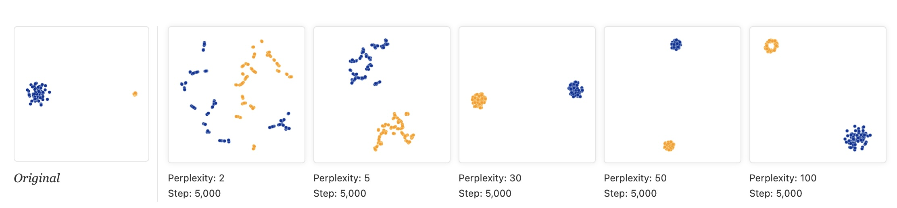
“Size refers to spatial extent/area, not the number of points in the cluster.”
“The t-SNE algorithm adapts its notion of”distance” to regional density variations in the data set. As a result, it naturally expands dense clusters, and contracts sparse ones, evening out cluster sizes.”
t-SNE
“Distances between clusters might not mean anything”
“The next diagrams show three Gaussians of 50 points each, one pair being 5 times as far apart as another pair.”
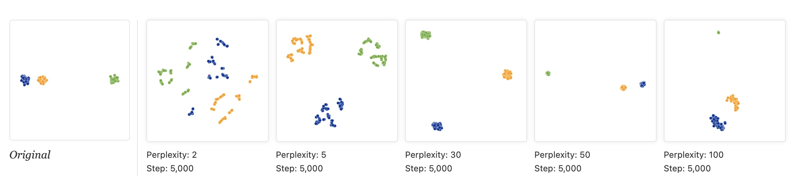
Try it: same perplexity, different random start
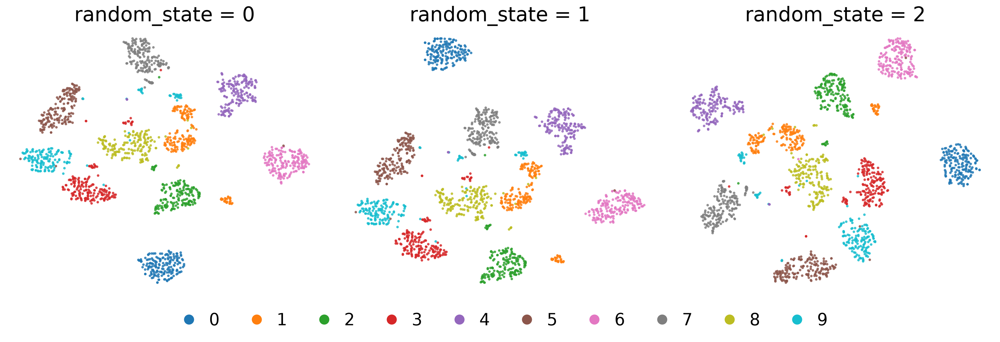
- Same data, same perplexity (30), random initialization; only the seed changes
- The same ten groups appear each time, but the arrangement changes
- Digit 0 (blue) sits at the bottom, the top left, and the far right
t-SNE
“Random noise doesn’t always look random.”
“The next diagrams show genuinely random data, 500 points drawn from a unit Gaussian distribution in 100 dimensions. The left image is a projection onto the first two coordinates.”
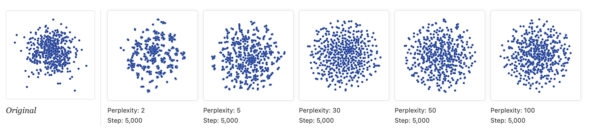
t-SNE
“For topology, you may need more than one plot”
“The plots below show two groups of 75 points in 50 dimensional space. Both are sampled from symmetric Gaussian distributions centered at the origin, but one is 50 times more tightly dispersed than the other. The “small” distribution is in effect contained in the large one.”
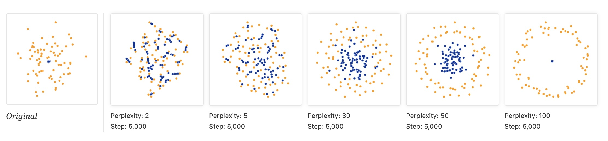
Topomap (Doraiswamy et al)
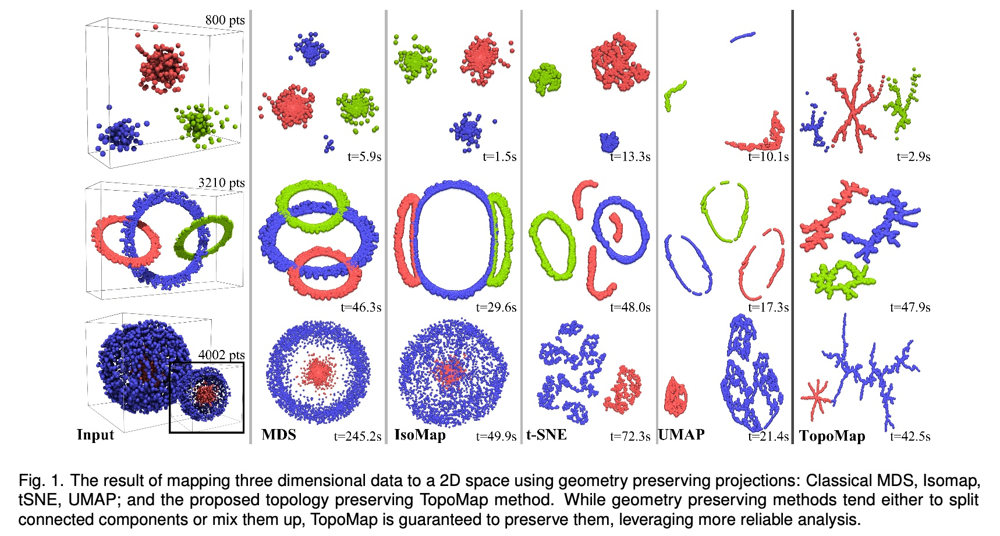
- Topomap preserves the 0-dimensional persistence diagram of the Rips filtration of the high-dimensional data.
Understanding UMAP (Coenen & Pearce)
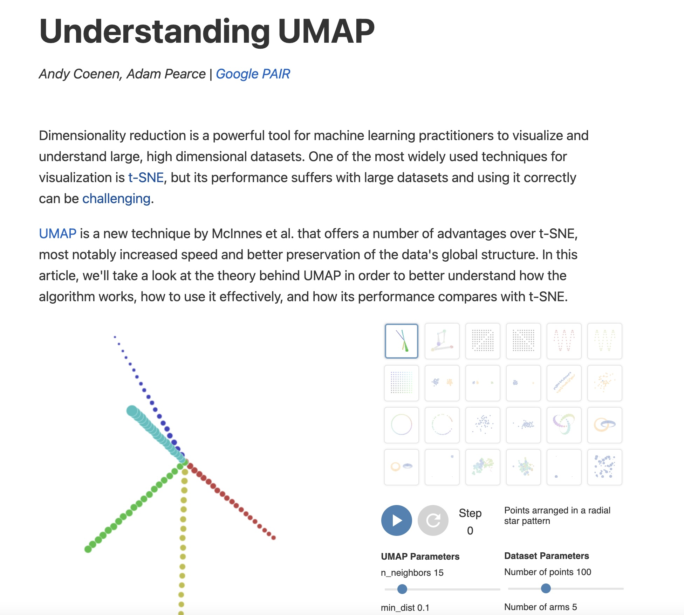
https://pair-code.github.io/understanding-umap/
UMAP
- Coenen and Pearce: “UMAP is fast, scaling well in terms of both dataset size and dimensionality. … UMAP can project the 784-dimensional, 70,000-point MNIST dataset in less than 3 minutes, compared to 45 minutes for scikit-learn’s t-SNE implementation. Additionally, UMAP tends to better preserve the global structure of the data.”
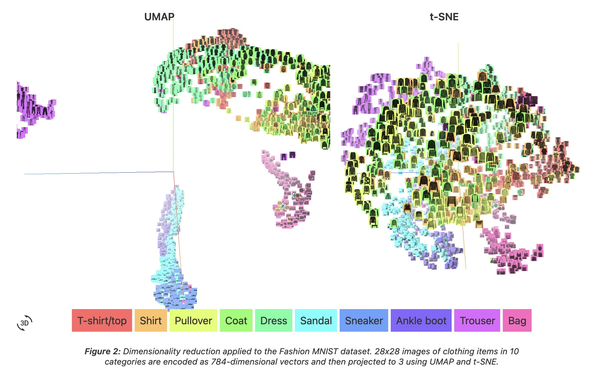
UMAP
- “UMAP, at its core, works very similarly to t-SNE - both use graph layout algorithms to arrange data in low-dimensional space.”
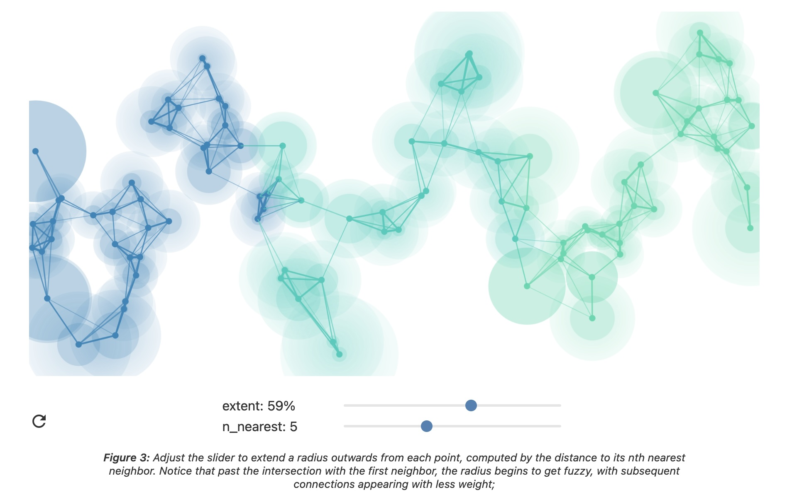
UMAP parameters
n_neighbors - the number of approximate nearest neighbors used to construct the initial high-dimensional graph.
min_dist - the minimum distance between points in low-dimensional space.
UMAP parameters
n_neighbors - the number of approximate nearest neighbors used to construct the initial high-dimensional graph.
min_dist - the minimum distance between points in low-dimensional space.
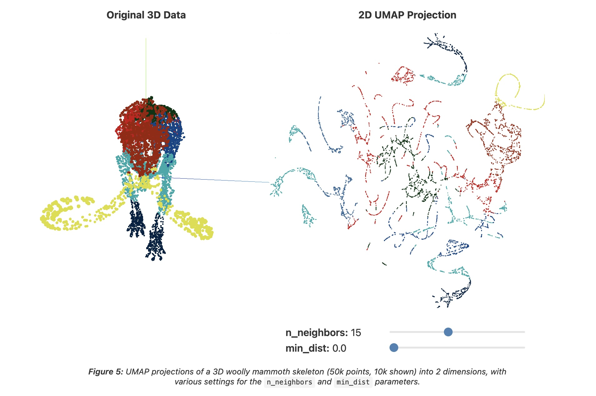
UMAP parameters
n_neighbors - the number of approximate nearest neighbors used to construct the initial high-dimensional graph.
min_dist - the minimum distance between points in low-dimensional space.
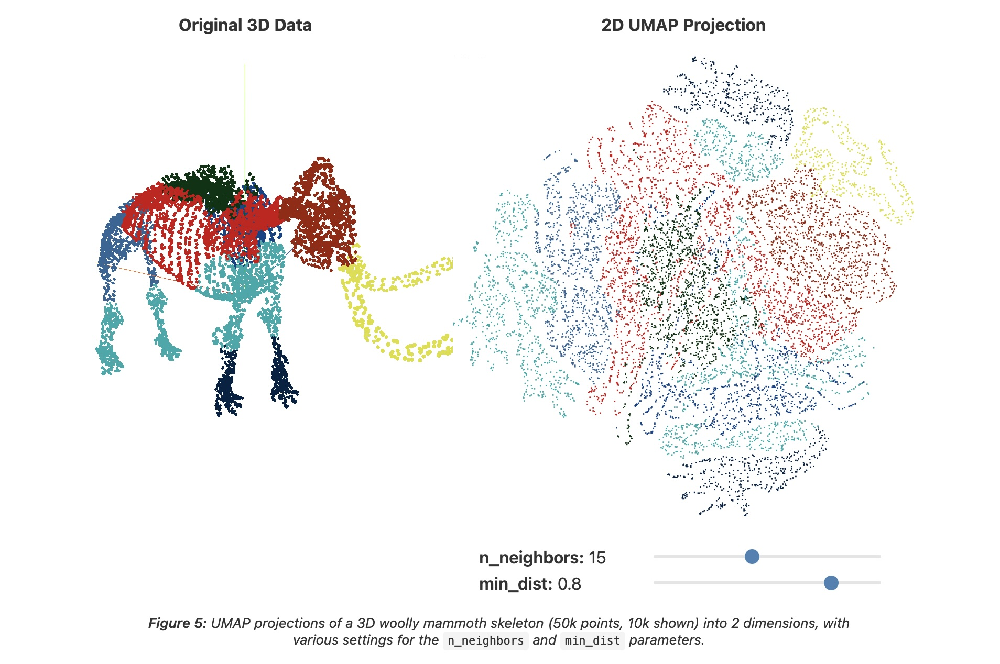
Try it: UMAP n_neighbors × min_dist
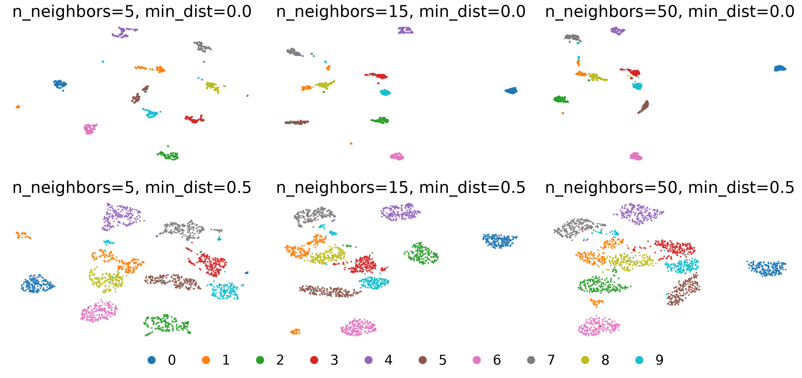
- Rows: min_dist 0.0 vs 0.5. Columns: n_neighbors 5, 15, 50. min_dist changes how tightly points pack; n_neighbors changes how the groups are laid out relative to each other
UMAP
“However, it’s important to note that, because UMAP and t-SNE both necessarily warp the high-dimensional shape of the data when projecting to lower dimensions, any given axis or distance in lower dimensions still isn’t directly interpretable in the way of techniques such as PCA.”
Suggested reading: https://pair-code.github.io/understanding-umap/supplement.html
- “Most dimensionality reduction algorithms fit into either one of two broad categories: Matrix factorization (such as PCA) or Graph layout (such as t-SNE).”
- “At its core, UMAP is a graph layout algorithm, very similar to t-SNE, but with a number of key theoretical underpinnings that give the algorithm a more solid footing.”
UMAP
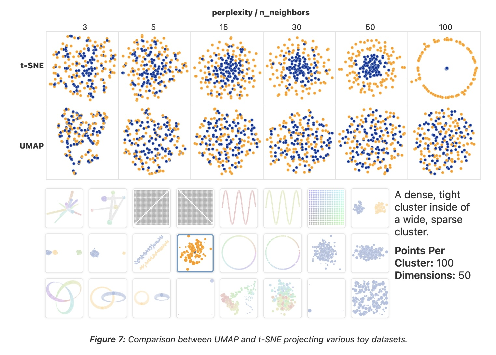
PCA, t-SNE or UMAP: which one when?
| PCA | t-SNE | UMAP | |
|---|---|---|---|
| Kind | linear | non-linear, neighbor graph + KL divergence | non-linear, fuzzy neighbor graph |
| Keeps | global variance | local neighborhoods | local neighborhoods, some coarse layout |
| Axes and distances mean something? | yes: axes are directions in the data | no: sizes and gaps are artifacts | no: gaps are not reliable |
| Knobs | number of components | perplexity, steps, learning rate | n_neighbors, min_dist |
| Repeatable? | yes | depends on initialization and seed | depends on seed |
| New points | transform |
refit | transform |
| Reach for it to | get a first look, denoise, preprocess | see local cluster structure on small and medium data | see structure on larger data, reuse the mapping |
Is this projection any good?
- Score a projection by checking whether neighborhoods survive: for each point, compare its k nearest neighbors in the original space with its k nearest neighbors in the map
- Trustworthiness: are the neighbors in the map real neighbors? It penalizes false neighbors: points that look close in the map but were far apart in the data
- Continuity: were the real neighbors kept? It penalizes tears: points that were close in the data but ended up far apart in the map
- Both run from 0 to 1 (1 is perfect). In scikit-learn:
trustworthiness(X, X_map, n_neighbors=k); continuity is the same function with the two spaces swapped - Both are local: they say nothing about the distances between clusters
T(k) = 1 − 2 / (N·k·(2N − 3k − 1)) · Σi Σj ∈ Ui (r(i,j) − k)
Ui = false neighbors of i (in its map neighborhood, not in its data neighborhood); r(i,j) = rank of j among i’s neighbors in the original space
Four projections of the digits, scored
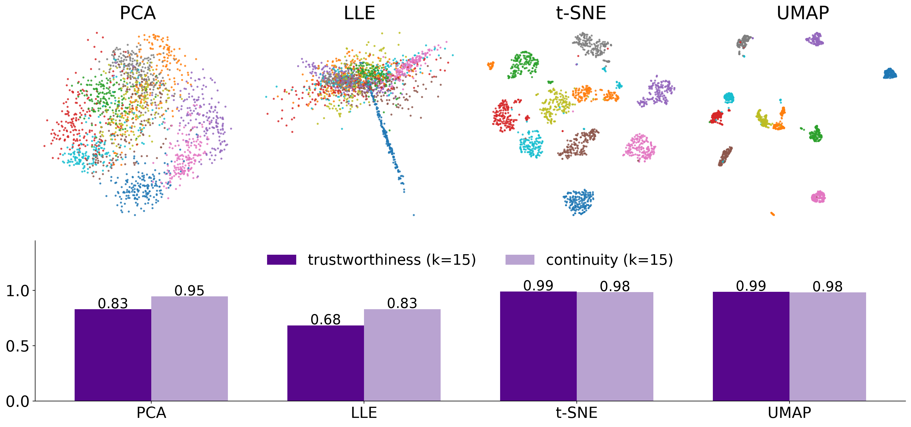
But the score barely moves with perplexity
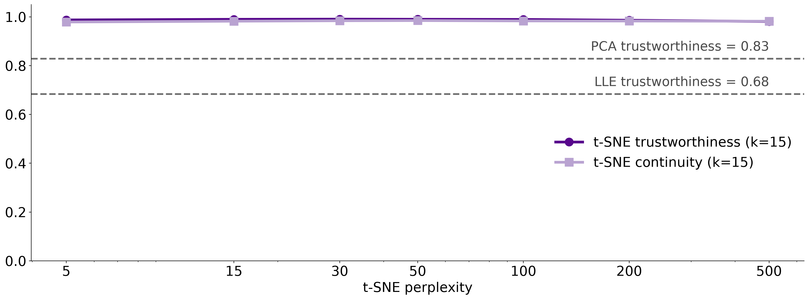
- Perplexity 5 to 500 stays between 0.98 and 0.99, although the maps on the earlier slides look quite different. The metric separates methods (dashed lines: PCA, LLE) but is too coarse to pick a perplexity, and it cannot see cluster sizes or the gaps between clusters
Before you trust a projection
- Vary the settings: several perplexities (5 to 100) or n_neighbors (5 to 50), and at least two seeds. Keep only what is stable
- Do not read cluster size, cluster density, or the distance between clusters
- Compare with a baseline: PCA, and a noise dataset of the same size. Do the “clusters” appear there too?
- Score it: trustworthiness and continuity; if you have labels, how well do they predict from the map (for example k-NN accuracy)?
- Report it: method, parameters, seed and preprocessing, in the caption
- Use it to ask questions of the original data, not as evidence on its own
What about user interaction?
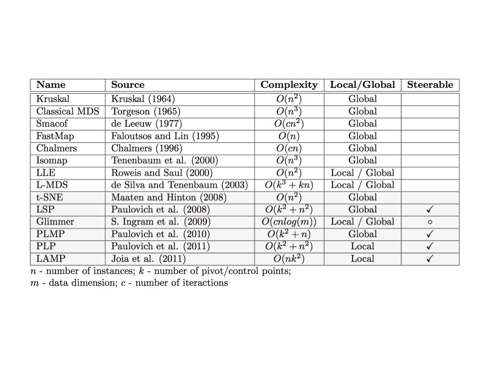
Steering a projection
- Steerable methods (the check marks in the table: LSP, PLMP, PLP, LAMP) let the user influence the layout instead of accepting one static map
- A common recipe: pick a small set of control points, place them where you want them in 2-D, and position the remaining points relative to them
- Interactions follow from that: drag a point, group points, change a parameter and see the map update
- Questions to ask of any interactive projection in a project: what can the user change, and what stays fixed?
Next Week: Deep Learning Visualization Fundamentals
- Tuesday, Oct 27: terminology and foundations, linear models and loss functions, shallow and deep networks, activation functions
Readings:
- Prince, Understanding Deep Learning (2023), Chapters 2-4
- TensorFlow Playground and CNN Explainer (interactive, try them before class)
Milestones:
- Today (Oct 20): project proposal, 4 pages
- Nov 3: mid-term update, 1 page, with preliminary results